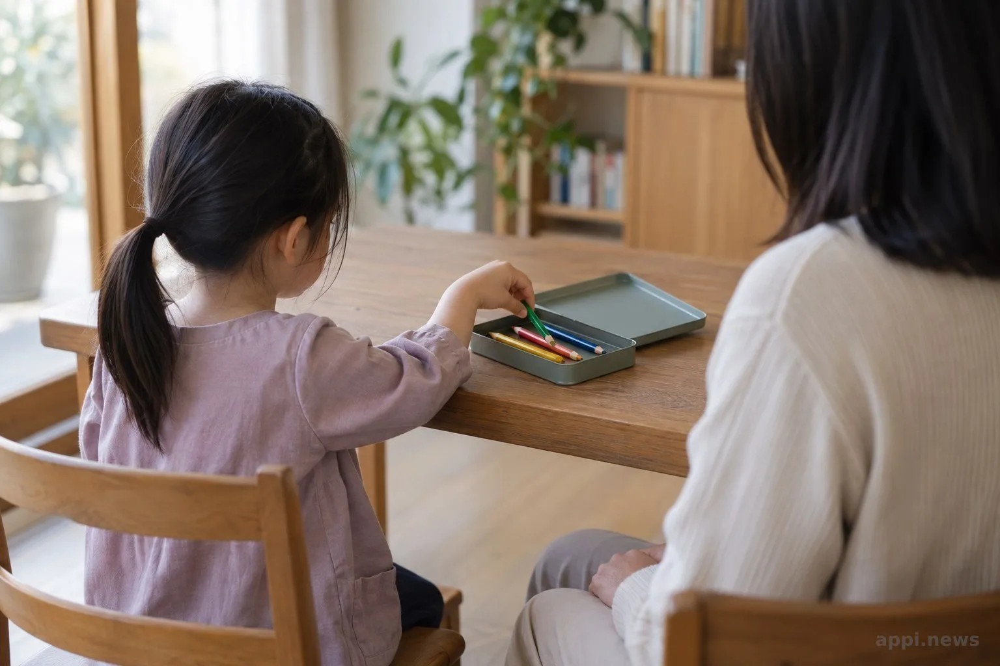

藝術陪伴能幫助受創兒少嗎？分清活動、治療與求助界線
藝術活動能為孩子帶來表達與互動空間，但不等於藝術治療。認識研究限制、陪伴者能做的事，以及疑似兒少受不當對待時的求助方式。
孩子願意畫畫，是不是代表創傷正在好轉？藝術活動可以提供創作與表達的機會；藝術治療則由具相關訓練的專業人員，依評估和目標執行。家長、教師和志工尊重孩子的選擇，有疑慮時尋求協助，不替畫面下解讀。
一、作品可以表達感受，不能代替評估
**不能只憑孩子是否畫畫或畫了什麼，判斷創傷是否復原。**是否需要協助，要看孩子整體狀況與生活變化，由合適專業人員評估。
孩子可能喜歡某種顏色，也可能只想試用新的畫具。人物大小或畫面內容沒有一般人可直接套用的診斷答案。作品即使令人不安，也不要推斷孩子遭遇了什麼，或要求他說明畫的是不是親身經歷。
大人可留意睡眠、上學、人際互動或情緒是否明顯改變，記下時間與情境，再和照顧者或社工討論。分享作品前，也要尊重孩子意願並保護隱私。

二、藝術陪伴與藝術治療的工作不同
**一般美術活動著重創作或學習，藝術陪伴著重支持與互動；藝術治療則有專業關係、評估及明確服務目標。**三者不應互相代稱。
親子共畫、社區畫畫課或志工手作活動，都是共同創作的機會。帶領者說明活動內容，讓孩子選擇參加、旁觀或休息，不把作品當心理測驗，也不宣稱可以治療創傷。
台灣藝術治療學會的倫理準則要求治療師在專業能力範圍內服務並尊重個案隱私。洽詢時確認訓練、目標、督導、轉介方式，以及未成年人同意和作品保存規則。技巧和熱忱不能取代專業責任。
台灣藝術治療學會《執業與倫理準則》指出：「藝術治療師不得在超出其執業、經驗、訓練和教育的範疇之外，提供藝術治療的服務。」
三、研究有初步訊號，適用範圍仍有限
**研究觀察到藝術介入後，創傷症狀與負向情緒指標有所改善。**研究對象與介入形式不同，運用時要依孩子的狀況調整，專業藝術治療與一般美術活動的定位也不同。
Morison、Simonds與Stewart於2022年發表的系統性回顧與統合分析，整理兒童及青少年接觸創傷事件後的創意藝術介入研究。統合結果顯示，創傷後壓力症狀分數在介入前後比較的15項研究中下降，與對照組比較的7項研究也呈現下降；負向情緒指標亦有改善。不過，焦慮與外化行為結果不一致，作者並提醒研究品質、介入方式和創傷經驗存在差異。
這類創意藝術介入涵蓋不同形式，不能直接等同視覺藝術治療。Annous、Al-Hroub與El Zein於2022年回顧難民創傷族群的藝術治療研究，納入8項實證研究，認為目前用於降低難民創傷後壓力症狀的證據仍不足。Bosgraaf等人回顧兒童及青少年心理社會困擾的藝術治療研究，範圍也不限於兒少保護案件。
研究支持由受訓專業人員執行的藝術介入。兒少保護案件中的受創兒少，或有創傷後壓力症候群及其他心理困擾者，應由合適人員依需求安排支持。若活動引起不舒服或強烈情緒，先暫停並聯絡督導或專業人員，不要求孩子回想細節。
四、一般大人先陪伴，安全疑慮交由專業處理
**可以讓孩子決定是否創作、是否分享，並留意具體安全與生活狀況。**志工和一般大人不做心理評估、不解讀作品、不追問創傷經過，也不承諾在安全受威脅時絕對保密。
開始前說明孩子可以選材料、換活動或休息。不想畫就讓他旁觀或做別的事；若感到不舒服，先停止活動。陪伴要讓孩子保有選擇，不必為了安撫大人而作答或回憶。
若孩子主動提及安全疑慮，先平靜聆聽，不盤問或自行調查。依流程記下孩子原話與可觀察情況，聯絡督導、社工或主管機關。若有人可能受傷，須找能提供保護的成年人協助。
依《兒童及少年福利與權益保障法》第69條，不得以媒體或其他公示方式揭露特定兒少姓名及足以識別身分的資訊。衛福部113保護專線全年24小時受理兒少保護通報、求助諮詢及轉介；立即危險先撥110。提供已知情況即可，不必自行查案。藝術陪伴不涉及藥品或保健品交互作用；若孩子同時接受照護，可與照護團隊討論活動安排。
- 讓孩子自己選材料，並明確告訴他可以不畫、不分享或中途休息。
- 記錄具體觀察，不從作品推斷原因；有疑慮時聯絡督導或社工。
- 疑似兒少遭受不當對待可撥113諮詢或通報；立即危險撥110。
- 畫畫可成為表達與互動的媒介，不能單獨診斷創傷或判斷復原。
- 藝術治療有專業訓練、評估與服務目標，一般活動不應宣稱具有相同效果。
- 尊重孩子選擇，遇到安全疑慮按流程轉介；疑似不當對待聯絡113，立即危險撥110。
五、常見問題：陪伴、轉介與求助
**不可以。**藝術陪伴是支持性活動；是否需要心理治療、醫療或社政服務，應由合適專業人員依孩子狀況評估。
常見問題
Q1：孩子拒絕畫畫，需要鼓勵他嗎？
可以邀請，但不必勉強。讓孩子選擇旁觀、休息或改做其他活動，也是在尊重他的界線。
Q2：可以從畫作看出孩子曾受虐嗎？
不能只靠畫作判定。若有擔憂，記錄可觀察的情況並諮詢社工或主管機關，不自行解讀或追問。
Q3：藝術活動中孩子情緒激動，怎麼辦？
先暫停活動，讓孩子有休息空間，再依機構流程聯絡督導或專業人員。不要強迫孩子回想或說明細節。
Q4：什麼情況適合轉介專業人員？
若睡眠、上學、人際互動、情緒或日常活動出現持續而明顯的變化，可向社工、心理專業人員或醫療人員討論；安全疑慮則依兒少保護流程處理。
Q5：懷疑兒少遭受不當對待，可以怎麼求助？
可撥113保護專線諮詢或通報；若有立即人身安全危險，先撥110。一般民眾提供所知情況即可，不必自行查案。
今天陪孩子時，讓他決定是否開始與分享；有安全疑慮，就記下具體觀察並聯絡合適資源。
參考文獻
- Morison L, Simonds L, Stewart SJF. (2022). Effectiveness of creative arts-based interventions for treating children and adolescents exposed to traumatic events: a systematic review of the quantitative evidence and meta-analysis. Arts & Health. https://pubmed.ncbi.nlm.nih.gov/34969356/
- Annous N, Al-Hroub A, El Zein F. (2022). A Systematic Review of Empirical Evidence on Art Therapy With Traumatized Refugee Children and Youth. Frontiers in Psychology, 13, 811515. https://pmc.ncbi.nlm.nih.gov/articles/PMC9189733/
- Bosgraaf L, Spreen M, Pattiselanno K, van Hooren S. (2020). Art Therapy for Psychosocial Problems in Children and Adolescents: A Systematic Narrative Review on Art Therapeutic Means and Forms of Expression, Therapist Behavior, and Supposed Mechanisms of Change. Frontiers in Psychology, 11, 584685. https://pmc.ncbi.nlm.nih.gov/articles/PMC7578380/
- 台灣藝術治療學會 (2012). 執業與倫理準則. https://www.arttherapy.org.tw/mw/cufiles/files/執業與倫理準則.pdf
- 台灣藝術治療學會. 審查標準 Q&A. https://www.arttherapy.org.tw/post/post/data/arttherapy/tw/examination_standard/
- 衛生福利部保護服務司. 113保護專線介紹. https://dep.mohw.gov.tw/dops/cp-1183-6499-105.html
- 兒童及少年福利與權益保障法 (2012). 第69條. 臺北市法規查詢系統. https://laws.gov.taipei/law/LawSearch/LawExport/FL024905?date=20120808&type=0
本文同步刊於 appi.news。